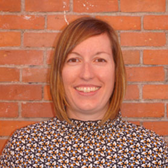
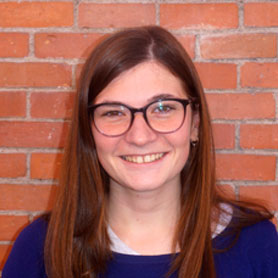
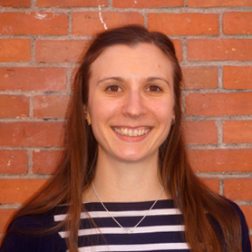

Keep calm and code on!
EQUIPO
Class-coders es un grupo de desarrolladoras front-end que quiere hacerse un hueco en el mundo digital.
Nace a partir de la creatividad, motivación y la necesidad de continuo aprendizaje de un grupo de mujeres que acaban de empezar.
QUIÉNES SOMOS
-
Ana María Romero
Ana es una granadina que vino a buscarse la vida a Madrid. Después de varios años dedicada al sector del Turismo, busca hacerse un hueco como profesional de las nuevas tecnologías. Con muchas ganas de poner en práctica todo lo aprendido en Adalab está deseando formar parte de la comunidad Front-End.
-

Iris Paredes
Iris es candeledana y se independizó a los 18 años en Madrid. Técnica Superior en Gestión Comercial y Marketing, con amplia experiencia laboral en el sector de telefonía y también en diseño de cocinas. Tras sentirse atrapada en puestos “automatizables” se dió cuenta de que debía dar el salto al sector IT y convertirse en Desarrolladora Web.
-

Libertad Chapinal
Tras salir de la universidad, Libertad comenzó a trabajar como bióloga. Aunque la experiencia fue corta, le sirvió para darse cuenta de que aún le quedaba mucho por aprender y vió que el mundo Front-End y Adalab le ofrecieron una oportunidad que no podía rechazar.
-

Megan Edwards
Megan viene de Nottingham en Inglaterra. Después de un año y media en Madrid trabajando como profesora de inglés, ¡está preparada para un nuevo reto! Siempre ha estado interesada en la programación y ahora es la hora para convertirse en parte del mundo digital. Le gusta leer, tocar el piano y hornear sin gluten.
-

Sara Cabeza
Sara es una diseñadora gráfica - UX/UI, originaria de Málaga y muy indentificada con la cultura británica después de vivir durante años en Inglaterra. Siempre le ha interesado el mundo tecnológico y ahora se lanza a aprender código y programación. Obsesionada con los perros (aunque sea alérgica) y muy fan del karaoke.